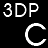

<table border="0" cellspacing="0" cellpadding="0">
	<tr>
    	<td width="48px"></td>
        <td><font style="color:#E4E4E4; font-size:20px; padding-left:10px;">3DP 칩</font><font style="color:#888888; font-size:12px;">&nbsp;3DP Chip<br></font><font style="color:#888888; font-size:12px; padding-left:10px;">포맷 후 꼭 필요한 필수 드라이버를 잡아주는 유틸리티.</font></td>
    </tr>
    <tr>
    	<td colspan="2">
        	<font style="color:#E4E4E4; font-size:12px;">
            	<br>언어: 한글 | 크기: 3MB<br>
                각 사용자의 컴퓨터의 드라이버를 쉽게 찾을 수 있도록 도와주는 프로그램입니다.<br>
                자매품으로 3DP Net도 존재하며, 3DP Net은 포맷 후 랜카드 드라이버를 자동으로 잡아줍니다.<br><br>
                <a href="http://software.naver.com/software/summary.nhn?softwareId=MFS_116481" target="_blank">다운로드</a>
            </font>
        </td>
    </tr>
</table>
